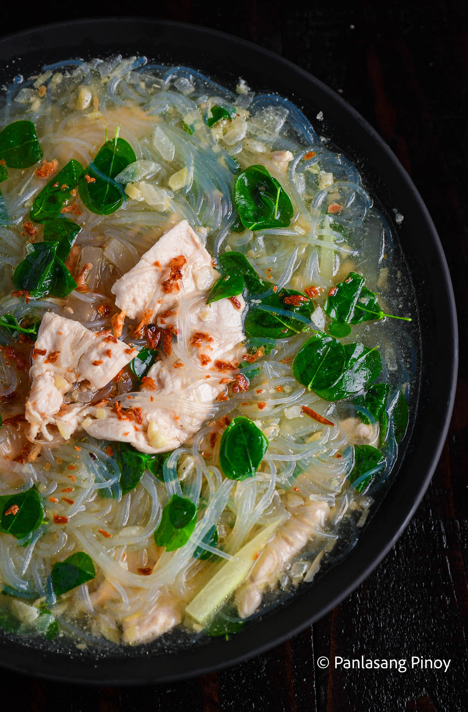
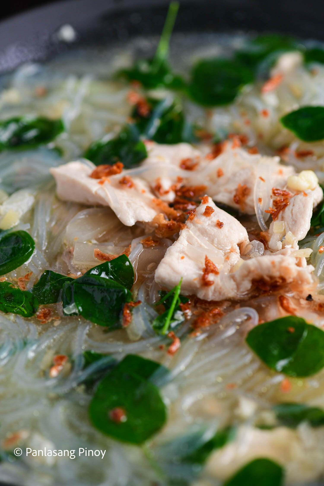
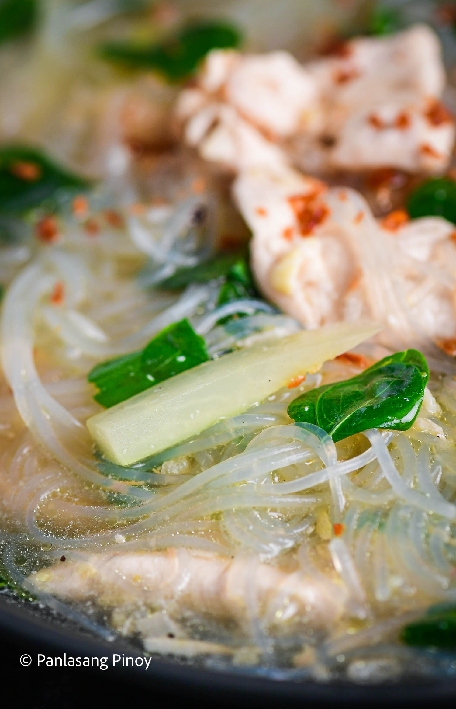
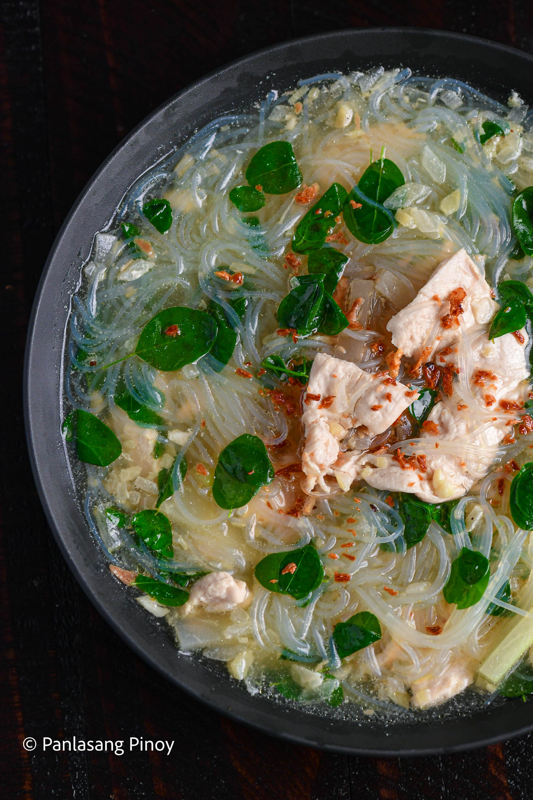

How to Cook Chicken Sotanghon Tinola
The cold January weather can be a blessing to some, but a bit of a burden to others. With the cool breeze and even cooler nights unfortunately comes the addition of the flu and other viruses. When it comes to getting sick, soups and stews are the cure to soothing both your stomach and any symptoms. And even when you aren’t sick, they can be just as delicious and enjoyable. One classic example of this would be the delightful and hearty tinolang manok. But what if I told you there was a way to amp up this indubitably tasty soup? This is where our chicken sotanghon tinola makes its warm welcome.
I say warm welcome because this soup is, in fact, the perfect warm treat during months full of cold weather! Chicken Sotanghon Tinola soup gives you all the tinola flavors you adore with the addition of sotanghon noodles. This dish is essentially another kind of chicken noodle soup — known for comforting not just the stomach but also the soul. Indeed, one bite or slurp of this Chicken Sotanghon Tinola is sure to give you oodles of comfort. You’ll feel warm from the inside out with this delightful Filipino dish with a twist.
With mild but unforgettable flavors, tinolang manok is without a doubt a Filipino staple. The ingredients of a classic chicken tinola are easily found in any local Filipino grocery. This dish is definitely a go-to for families who want something simple yet healthy. The broth is tasty and gingery, your papaya soft and mild, and your chicken so tender it absorbs the rest of your spices well. Using chicken breast slices makes your tinola even healthier. Plus, ginger and malunggay give your tinola that extra layer of taste you won’t be able to part with.
Tinolang Manok is a classic, full of an assortment of health benefits that guarantee you and your body health and happiness. From chicken being an excellent source of protein, its other ingredients are equally life-giving. Who can forget the powerhouse benefits that moringa leaves or malunggay bring? Vitamins A through E are only some of the nutrients malunggay is rich in. Further, the iron, protein, and antioxidants you can derive from these leafy greens make your body healthy and strong. This Chicken Sotanghon Tinola, thus, is the perfect bowl of deliciousness and nutritiousness combined!
How to Make this Chicken Sotanghon Tinola Soup
Chicken Sotanghon Tinola is as easy to make as the traditional Filipino fare. To begin, all we need to do is sauté garlic, onion, and ginger. When your onions soften, add in your chicken and cook, until you get a nice light brown shade on its outer layer. Pour in your rice wash water and bring it to a boil, before adding in one Knorr Chicken Cube. This cube will add even more flavor to your dish, and give it that even heartier feeling! Cover your pot and let your chicken sotanghon tinola boil on low to medium heat. This should only take about 15 minutes. The next step in your Chicken Sotanghon Tinola recipe would be to add your papaya and sotanghon noodles. For about 5 minutes, let these ingredients cook together, then add in your malunggay leaves. For more flavor, season your soup with ground black pepper and patis, then add toasted garlic on top for that extra layer of texture. Your Chicken Sotanghon Tinola Soup is ready! Transfer your soup to a serving bowl, and serve it piping hot. You and your family are sure to enjoy this filling treat!
Share and enjoy! Let us know what your thoughts are on this yummy Chicken Sotanghon Tinola.
| Chicken tinola with vermicelli | |
| Course | Main Course |
| Cuisine | Filipino |
| Keyword | chicken noodle soup, chicken tinola, sotanghon |
| Prep Time | 5 minutes |
| Cook Time | 45 minutes |
| Servings | 5 people |
| Calories | 351kcal |
| Author | Vanjo Merano |
- 10 ounces boneless chicken breast
- 6.25 ounces sotanghon noodles
- 1.25 Knorr Chicken Cube
- 7.5 ounces green papaya sliced
- 1.25 cup malunggay leaves
- 5 cloves garlic chopped
- 1.25 onion chopped
- 3.75 thumbs ginger minced
- 2.5 tablespoons cooking oil
- 7.5 cups rice wash hugas bigas
- Patis and ground black pepper to taste
Ingredients
- Saute garlic, onion, and ginger.
- Add chicken once the onion softens. Cook until the outer layer of the chicken turns light brown.
- Pour water. Let boil. Add Knorr Chicken Cube. Cover the pot and boil in low to medium heat for 15 minutes.
- Add papaya and sotanghon. Cook for 5 minutes.
- Add malunggay leaves.
- Season with ground black pepper and patis. Finish by adding toasted garlic.
- Transfer to a serving bowl. Serve hot. Share and enjoy.